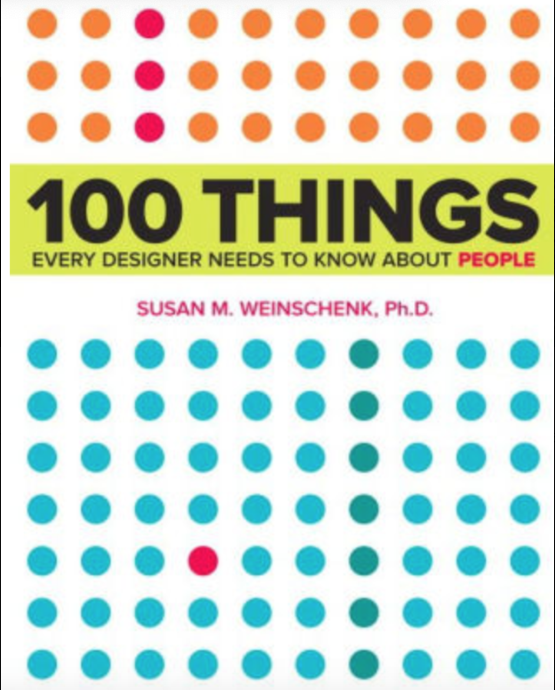
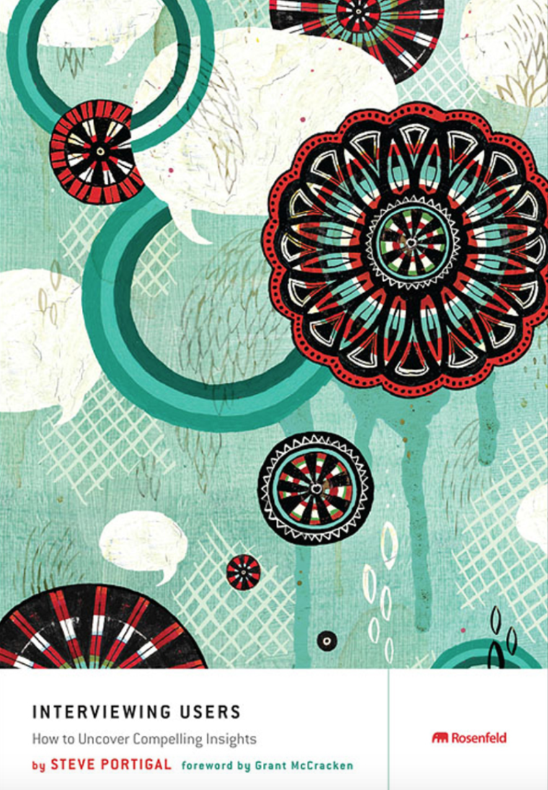
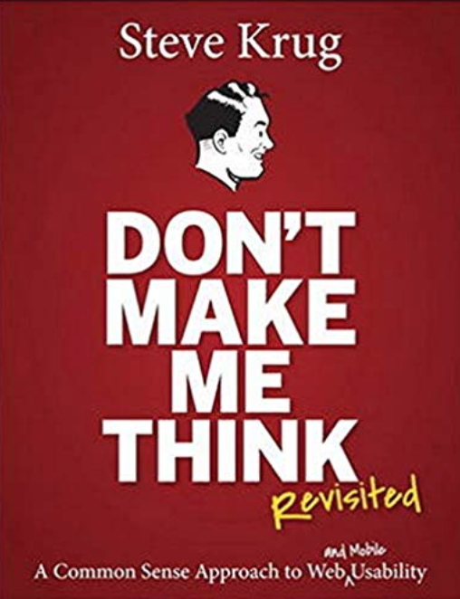

UX Researcher

Hello! Nice to meet you. I am originally from Xiamen, China. I am currently a graduate student studying at University of Michigan School of Information. I am passionate about uncovering user insights and bringing
positive impacts to the community. I enjoy interviewing people, learning their motivations and designing to customize their needs. After coming to UMSI, I have done couple of projects related to user experience design and research. I have a passion for advocating for
underepresented populations. I would like to learn more about accessibility design in the future.
If you are also interested in reading books related to UX and Psychology, I would like to chat more! Please see below book gallery that I collected:
Book Gallery


